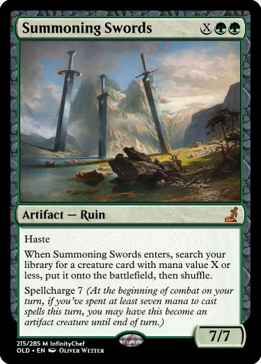

How can we find our Guber + Seer?
This page is dedicated to listing and discussing the methods we have, mostly tutors, for grabbing specifically Guber or Seer from our deck. If we don't have Guber in play, then our echoes cannot do the work of creating guber copies for us - getting the first guber (and second, if the first is killed) is a necessary, and at times difficult, step for our deck. If we have our three gubers in play, but don't draw into cards that can find us seer, it is likely that our storm will hit a wall and be unable to finish the job.
Summoning Swords
Summoning Swords is the most obvious replacement for the nerfed Ozan's Blessing, getting any creature of MV 2 (which includes both guber and seer) into play for 4 mana instead of 3. However, it's not quite so simple as a single extra mana cost. A lot of the draw of ozan's blessing was (and is) its instant-speed timing - the ability to basically flash in a guber on the opponent's endstep.
On the other hand, if we are doing any sort of storm, spellcharge 7 is not insanely difficult, and it even has haste, so we could theoretically be casting this to create substantial life pressure on the opponent. See here for more discussion, because its damage potential is not all that useful on its own. One drawback of its being mono-green, which is otherwise be a benefit, is that it can't be usefully cast using both black mana generated from wretched bargain or festered effluvium, because that wouldn't trigger guber's 3-color-cast ability.
Axiomatic Shift

Axiomatic Shift is very similar to Summoning Swords, also a 4-mana sorcery to put into play either guber or seer. Due to using selesnya mana rather than double-green at base, it is able to take advantage of generated black mana more easily, but this comes with a cost to our mana base - the two life lost off a shockland is often the difference between life and death, and running tapped lands is very dangerous because it removes the option for draw cards to be mana-positive by drawing lands when we haven't yet played any for turn. It is potentially possible to bring the mana cost of shift down to 3 by removing counters, see here for more details, but with the most common cards for the deck this is unlikely to be useful - pouncer is already able to turn its counter into a mana or more, so it doesn't help much in that respect.
Cabinet Recruiter
Recruiter has an interesting role to play in that if played to grab guber #1 on the killing turn it is 1 mana more expensive, and in addition it is unable to tutor guber unless there is a prior non-green permanent you control in play. However, if we can find the needed colored permanents, then recruiter is able to be played a turn ahead of time, allowing for the first guber to be played from hand. Notably this is also a 3-drop which could potentially serve as either an MP3 or a seer tutor depending on which we are lacking. I've played with this less, but it feels potentially quite strong for the deck, especially when facing decks which are more removal-heavy.
Get Your Wish
As a means to grabbing the first guber, Get Your Wish is extremely weak - you are paying a 3-mana premium on top of the already expensive shift/swords just for a single 2-mana creature. That said, it works totally fine for the job of being an additional copy of shift/swords for grabbing seer. Where it really shines is elsewhere, though.
Cryptology
Instead of requiring a non-green permanent in play, Cryptology requires a 2-mana card in the graveyard. Since the deck benefits most from 3-drops, and since graveyard hate incidentally hits this deck reasonably hard, I haven't played this yet.